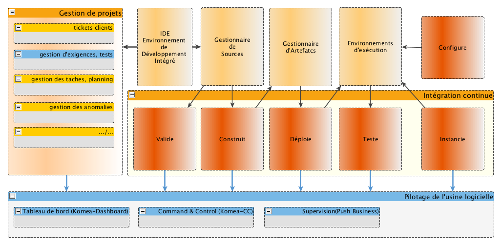

Architecture fonctionnelle

Schéma fonctionnel de l’usine logicielle
La fonction “piloter” couvre 3 fonctions :
- suivre = aggrégation de données dans un tableau de bord = KOMEA-Dashboard
- orchestrer = commander de manière synchronisée les outils de l’usine = KOMEA-CC
- superviser = surveiller le bon fonctionnement de l’usine logicielle = Push Business
La fonction “Valider les développements” recouvre :
- l’Analyse Qualité du code
- les revues peer to peer (fonction manuelle par excellence)
- les test unitaires (faudrait-il les modéliser à part?)
La fonction “Gestion de Projet” recouvre:
- gestion des tickets clients
- gestion des bugs
- gestion des taches
- gestion des ressources
- planning
- .../...
On ajoute la fonction “Gestion des Exigences et des Tests” qui est une demande récurente actuellement.